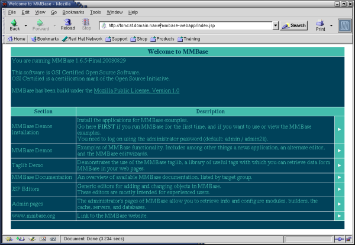

MMBase Installation HOWTO
Adrian Offerman
minor correctionsCopyright © 2003 - 2006 Adrian Offerman
June 25, 2006
| Revision History | ||
|---|---|---|
| Revision 0.3.5 | 2006-06-25 | Revised by: AO |
| Tomcat init script | ||
| Revision 0.3.4 | 2005-09-18 | Revised by: AO |
| minor corrections | ||
| Revision 0.3.2 | 2005-01-25 | Revised by: AO |
| MMBase 1.7.3, Java 1.5.0-01 | ||
| Revision 0.3.1 | 2004-12-26 | Revised by: AO |
| Email module | ||
| Revision 0.3.0 | 2004-12-25 | Revised by: AO |
| MMBase 1.7.2, Tomcat 5.5.4, Java 1.5.0, MySQL Connector/J 3.0.16-ga, Jikes 1.22 | ||
| Revision 0.2.6 | 2004-07-27 | Revised by: AO |
| minor additions | ||
| Revision 0.2.5 | 2004-02-28 | Revised by: AO |
| Creative Commons copyright license adjusted | ||
| Revision 0.2.4 | 2004-01-22 | Revised by: AO |
| Creative Commons copyright license; minor additions and corrections | ||
| Revision 0.2.3 | 2003-12-26 | Revised by: AO |
| minor additions and corrections | ||
| Revision 0.2.2 | 2003-12-20 | Revised by: AO |
| copyright adjusted | ||
| Revision 0.2.1 | 2003-12-18 | Revised by: AO |
| minor corrections | ||
| Revision 0.2.0 | 2003-12-15 | Revised by: AO |
| JK 2 Connector setup added | ||
| Revision 0.1.0 | 2003-12-10 | Revised by: AO |
| initial draft | ||
- Table of Contents
- 1. Introduction
- 2. Installation
- 3. Installing Java
- 4. Installing Tomcat
- 5. Replacing Tomcat's default JSP compiler Jasper with IBM's Jikes compiler
- 6. Installing ImageMagick
- 7. Installing MMBase
- 8. Connecting MMBase to MySQL using MySQL Connector/J
- 9. Installing MMBase additional applications
- 10. Configuring initial MMBase settings
- 11. Running MMBase
- 12. Connecting Apache and Tomcat using mod_jk2
- 13. Installing an Apache reverse proxy as a front-end to your MMBase server
- 14. Installing more MMBase servers on a single Tomcat server
- 15. Acknowledgements
- 16. Contributers
- 17. Revision history
- 18. Disclaimer
- 19. Copyright
This document describes the installation of the MMBase content management system on a Red Hat Linux distribution, using the Tomcat application server, and integrating it with MySQL and Apache.
Version: 0.3.5; June 25, 2006.
Author: Adrian Offerman
The latest version of this document can be found at:
http://www.offerman.net/MMBase-Installation-HOWTO/ |
Feedback is welcome at:
http://www.offerman.net/MMBase-Installation-HOWTO/feedback.html |
For questions, check out the MMBase website:
http://www.mmbase.org/ |
You can find the MMBase documentation at:
http://www.mmbase.org/docs/ |
Good luck!
1. Introduction
>From the MMBase website (www.mmbase.org):
"MMBase is a Web Content Management System with strong multimedia features. MMBase has a large installed base in The Netherlands, and is used by major Dutch broadcasters, publishers, educational institutes, national and local governments. MMBase is written in Java, it is Open Source Software (MPL) and all standards used are as 'open' as possible. The system can be used with all major operating systems, application servers and databases."
Unfortunately, the installation of MMBase is not well documented. Furthermore, when searching the internet looking for installation clues and trying out tips, it turns out that the details of the installation have changed frequently.
This document describes the installation of the MMBase content management system on a Red Hat Linux distribution, using the Tomcat application server, and the integration with MySQL and Apache.
It is based on our own experience and compiled to the benefit of the community.
These are the ingredients we used to cook up this recipe ourselves:
Red Hat 8.0 distribution running a 2.4.20 kernel, with Alan Cox 2 and EA/ACL extensions.
Java 2 Software Developers Kit (SDK) and Java 2 Run-time Engine (J2RE) from Sun's Java 2 Platform Standard Edition 5.0 (J2SE) (version 1.5.0-01),
Apache Jakarta Tomcat 5.5.4,
ImageMagick 6.1.3-7,
MMBase 1.7.3 with various modules,
MySQL Connector/J 3.0.16-ga,
Jikes 1.22.
Red Hat 8.0 distribution running a 2.4.20 kernel, with Alan Cox 2 and EA/ACL extensions.
Java 2 Software Developers Kit (SDK) and Java 2 Run-time Engine (J2RE) from the Blackdown Java 2 JDK version v1.4.1-01,
Apache Jakarta Tomcat 4.1.27,
ImageMagick 5.4.7-5,
MMBase 1.6.5 for JDK 1.4,
MySQL Connector/J 3.0.8,
Jikes 1.18.
2. Installation
Although we installed MMBase on a kernel with the Alan Cox and EA/ACL extensions, these features are no prerequisites.
We assume that you have already installed and configured Apache and MySQL on your server.
3. Installing Java
Download the latest versions of the Java 2 Development Kit (JDK) or Run-time Engine (JRE), and the accompanying documentation from:
http://java.sun.com |
Installation instructions and release notes for the JDK and JRE are available at the download page.
Make the binary distribution of the JDK executable and extract in a new directory:
chmod +x jdk-xxx.bin cd /usr/local/ .../jdk-xxx.bin |
Install the JDK documentation by unzipping it in the JDK directory:
cd /usr/local/jdk-xxx/ unzip .../jdk-xxx-doc.zip |
Change the ownership of the JDK directory and make it available as /usr/local/j2sdk/:
chown -R root:root /usr/local/jdk-xxx/ ln -s /usr/local/jdk-xxx /usr/local/j2sdk |
If you need only the JRE, the installation would be like this:
chmod +x jre-xxx.bin cd /usr/local/ .../jre-xxx.bin chown -R root:root /usr/local/jre-xxx/ ln -s /usr/local/jre-xxx /usr/local/j2re |
 | Using JDK version 1.5.0 caused our Tomcat server to crash every now and then:
|
 | For the (previously used) BlackDown Java for Linux distribution: Find yourself a mirror for the BlackDown Java Development Kit at:
There you can download the latest versions of the J2 Software Development Kit (SDK) and Run-time Engine (RE). Make sure you pick out the right version for the gcc library installed on your system. You can find out the version currently installed by typing:
Installation instructions for the Java Development Kit are available as INSTALL-j2sdk and INSTALL-j2re. Make the binary distribution of the SDK executable and extract in a new directory:
Change the ownership of the J2SDK directory and make it available as /usr/local/j2sdk/:
Do the same for the RE:
|
Since we didn't install the JDK and JRE in our path, we have to add the bin/ directories to our $PATH environment variable. To make sure the Java distributions and classes can be found, we set the $JAVA_HOME and $CLASSPATH variables as well.
For the Bourne shells, create a file /etc/profile.d/java.sh:
if ! echo ${PATH} | grep -q /usr/local/j2sdk/bin ; then
export PATH=/usr/local/j2sdk/bin:${PATH}
fi
if ! echo ${PATH} | grep -q /usr/local/j2re/bin ; then
export PATH=/usr/local/j2re/bin:${PATH}
fi
export JAVA_HOME=/usr/local/j2sdk
export CLASSPATH=.:/usr/local/j2sdk/lib/tools.jar:/usr/local/j2re/lib/rt.jar
|
Set its ownership and access rights:
chown root:root /etc/profile.d/java.sh chmod 755 /etc/profile.d/java.sh |
Do the same for C shells, by creating the file /etc/profile.d/java.csh:
if ( "${path}" !~ */usr/local/j2sdk/bin* ) then
set path = ( /usr/local/j2sdk/bin $path )
endif
if ( "${path}" !~ */usr/local/j2re/bin* ) then
set path = ( /usr/local/j2re/bin $path )
endif
setenv JAVA_HOME /usr/local/j2sdk
setenv CLASSPATH .:/usr/local/j2sdk/lib/tools.jar:/usr/local/j2re/lib/rt.jar
|
and setting its ownership and access rights:
chown root:root /etc/profile.d/java.csh chmod 755 /etc/profile.d/java.csh |
Now the JDK should be available to everyone on your system.
 | You can test the Java engine by typing:
or create a file Test.java:
and test the compiler:
|
4. Installing Tomcat
Download a binary distribution of Tomcat from the Apache Jakarta website:
http://jakarta.apache.org/tomcat/ |
If you don't want to run the Tomcat daemon as root, create a new user/group tomcat (first make sure that the UID and GID you use are still available by checking the files /etc/passwd and /etc/group):
groupadd -g 220 tomcat useradd -u 220 -g tomcat -c "Tomcat" -r -d /usr/local/tomcat -s "/sbin/nologin" tomcat |
| You really should not use the root account to run the Tomcat daemon; (using Tomcat version 4.1.27) we found out that this allows the MMBase admin user to write backup dumps of his sites anywhere on the system. |
<TODO: better solution available?>
Extract the Tomcat distribution in a new directory:
cd /usr/local/ tar -zxvf .../jakarta-tomcat-xxx.tar.gz |
| Version 4.1.27 came with a hot-fix:
|
Change the ownership of the Tomcat directory and make it available as /usr/local/tomcat/:
chown -R tomcat:tomcat /usr/local/jakarta-tomcat-xxx ln -s /usr/local/jakarta-tomcat-xxx /usr/local/tomcat |
Open up the firewall for web access to the Tomcat server by adding to the file /etc/sysconfig/iptables:
-A RH-Lokkit-0-50-INPUT -p tcp -m tcp --dport 8080 --syn -j ACCEPT |
You need to reboot your system to make this rule effective or restart the iptables firewall:
service iptables restart |
| Since (for some odd reason) some network managers allow outgoing web connections only to TCP port 80, there might be people around that cannot access your Tomcat (and MMBase) server through port 8080. Further below we will explain how to install a JK 2 mapping or a reverse proxy in Apache, so Tomcat and MMBase can be accessed through the Apache web server at port 80. Apart from the port issue, this has the advantage that you can use Apache to manage you SSL connections and use your existing Apache logs and statistics facilities for Tomcat and MMBase as well. If you decide to use Apache as a front-end to your Tomcat and MMBase server, there's no need to open up port 8080 in your firewall. |
To run Tomcat, set the $CATALINA_HOME environment variable:
CATALINA_HOME=/usr/local/tomcat |
and fire it up:
/usr/local/tomcat/bin/startup.sh |
Now you can access Tomcat's home page through (replace <hostname> with your hostname):
http://<hostname>:8080/ |
which should give you the Tomcat welcome screen.

To shutdown again:
/usr/local/tomcat/bin/shutdown.sh |
Since we want to automate the starting up and shutting down of the Tomcat server, we create a file /etc/rc.d/init.d/tomcat to do this for us:
#!/bin/sh
#
# Startup script for the Jakarta Tomcat Java Servlets and JSP server
#
# chkconfig: - 85 15
# description: Jakarta Tomcat Java Servlets and JSP server
# processname: tomcat
# pidfile: /var/run/tomcat.pid
# config:
# Source function library.
. /etc/rc.d/init.d/functions
# Source networking configuration.
. /etc/sysconfig/network
# Check that networking is up.
[ ${NETWORKING} = "no" ] && exit 0
# Set Tomcat environment.
export JAVA_HOME=/usr/local/j2sdk
export CLASSPATH=.:/usr/local/j2sdk/lib/tools.jar:/usr/local/j2re/lib/rt.jar
export CATALINA_HOME=/usr/local/tomcat
export CATALINA_OPTS="-server -Xms64m -Xmx512m -Dbuild.compiler.emacs=true"
export PATH=/usr/local/j2sdk/bin:/usr/local/j2re/bin:$PATH
[ -f /usr/local/tomcat/bin/startup.sh ] || exit 0
[ -f /usr/local/tomcat/bin/shutdown.sh ] || exit 0
export PATH=$PATH:/usr/bin:/usr/local/bin
# See how we were called.
case "$1" in
start)
# Start daemon.
echo -n "Starting Tomcat: "
/usr/local/tomcat/bin/startup.sh
RETVAL=$?
echo
[ $RETVAL = 0 ] && touch /var/lock/subsys/tomcat
;;
stop)
# Stop daemons.
echo -n "Shutting down Tomcat: "
/usr/local/tomcat/bin/shutdown.sh
RETVAL=$?
echo
[ $RETVAL = 0 ] && rm -f /var/lock/subsys/tomcat
;;
restart)
$0 stop
$0 start
;;
condrestart)
[ -e /var/lock/subsys/tomcat ] && $0 restart
;;
status)
status tomcat
;;
*)
echo "Usage: $0 {start|stop|restart|status}"
exit 1
esac
exit 0
|
Set its ownership and access rights:
chown root:root /etc/rc.d/init.d/tomcat chmod 755 /etc/rc.d/init.d/tomcat |
And add this init script to chkconfig:
chkconfig --add tomcat chkconfig tomcat on |
| Instead of creating your own init script, you can use the script that comes with the Tomcat package: /usr/local/tomcat/bin/catalina.sh. Make sure you set the Tomcat environment at the start of this script. Or create a short init script that calls the original Tomcat init script. |
| To install two (or even more) versions of Tomcat server on the same system, increase the port numbers of the second server (e.g. by 10), by editing the configuration file /usr/local/tomcat55/conf/server.xml:
Complete this second Tomcat server installation as above for the first server, using adjusted directory and file names. |
5. Replacing Tomcat's default JSP compiler Jasper with IBM's Jikes compiler
Since IBM's Java compiler Jikes is performing better than Tomcat's own JSP compiler Jasper, it's recommended to install Jikes instead.
Download the sources of Jikes from IBM's Research website:
http://jikes.sourceforge.net/ |
Extract and compile Jikes:
./configure --prefix=/usr/local/jikes make make check make install |
Check support for the -encoding option:
/usr/local/jikes/bin/jikes -help |
To have Jikes output its error messages in a Jasper compatible way, add this $CATALINA_OPTS environment variable to /etc/rc.d/init.d/tomcat:
export CATALINA_OPTS="-Dbuild.compiler.emacs=true" |
| If you get an error message saying Jikes can not use UTF8 encoding, add the following option as well:
|
Make Jikes your JSP compiler for Tomcat by adding to /usr/local/tomcat/conf/web.xml:
<init-param>
<param-name>compiler</param-name>
<param-value>jikes</param-value>
</init-param>
|
Since entering the full path to Jikes in /usr/local/tomcat/conf/web.xml doesn't seem to work (version 4.1.27), make the jikes program available in your path:
ln -s /usr/local/jikes/bin/jikes /usr/local/bin/jikes |
6. Installing ImageMagick
MMBase uses ImageMagick's convert tool to build and convert its images.
ImageMagick is already part of the Red Hat distribution. Check its availability using:
rpm -q ImageMagick |
If ImageMagick is not available on your system, install it using up2date:
up2date |
or download it from the Red Hat Network:
https://rhn.redhat.com/ |
and install it by hand:
rpm -ihv ImageMagick-xxx.rpm |
7. Installing MMBase
Download the binary distribution of MMBase, and the additional applications you need (i.e. CloudContext Security, Media, Email) (see the next section), from:
http://www.mmbase.org/ --> Download --> Releases |
| MMBase version 1.7.2 contained a nasty bug, resulting in problems with the editwizards. The 1.7.3 release includes a bugfix for this problem. |
Make sure you pick out the right version for the Java 2 JDK installed on your system. You can find out the version currently installed by typing:
java -version |
Extract the binary distribution of MMBase, copy it into the Tomcat directory, and change the ownership of the MMBase directory:
unzip mmbase-xxx.zip cd /usr/local/tomcat/webapps/ mkdir mmbase-webapp/ cp -R .../mmbase-x.x.x/mmbase-webapp/* ./mmbase-webapp/ chown -R tomcat:tomcat ./mmbase-webapp/ |
| Installing MMBase version 1.7 on Tomcat version 5 resulted in version incompatibilities:
We had to disable the RMMCI library to get this installation up and running:
|
For MMBase version 1.7 running on Tomcat version 5, enable the Xerces libraries:
mv /usr/local/tomcat/webapps/mmbase-webapp/WEB-INF/lib/xalan.renametojar \
/usr/local/tomcat/webapps/mmbase-webapp/WEB-INF/lib/xalan.jar
mv /usr/local/tomcat/webapps/mmbase-webapp/WEB-INF/lib/xerces.renametojar \
/usr/local/tomcat/webapps/mmbase-webapp/WEB-INF/lib/xerces.jar
mv /usr/local/tomcat/webapps/mmbase-webapp/WEB-INF/lib/xml-apis.renametojar \
/usr/local/tomcat/webapps/mmbase-webapp/WEB-INF/lib/xml-apis.jar
|
FATAL org.mmbase.servlet.MMBaseStartThread -
Could not find the MMBase module!org/apache/xpath/XPathAPI
|
For MMBase version 1.6 running on Tomcat version 4, replace the Tomcat Xerces libraries by those coming with MMBase:
mv -i /usr/local/tomcat/common/endorsed/xercesImpl.jar ~/
mv -i /usr/local/tomcat/common/endorsed/xmlParserAPIs.jar ~/
cp /usr/local/tomcat/webapps/mmbase-webapp/WEB-INF/lib/xalan.jar \
/usr/local/tomcat/common/endorsed/
chown tomcat:tomcat /usr/local/tomcat/common/endorsed/xalan.jar
chmod 644 /usr/local/tomcat/common/endorsed/xalan.jar
cp /usr/local/tomcat/webapps/mmbase-webapp/WEB-INF/lib/xerces.jar \
/usr/local/tomcat/common/endorsed/
chown tomcat:tomcat /usr/local/tomcat/common/endorsed/xerces.jar
chmod 644 /usr/local/tomcat/common/endorsed/xerces.jar
cp /usr/local/tomcat/webapps/mmbase-webapp/WEB-INF/lib/xml-apis.jar \
/usr/local/tomcat/common/endorsed/
chown tomcat:tomcat /usr/local/tomcat/common/endorsed/xml-apis.jar
chmod 644 /usr/local/tomcat/common/endorsed/xml-apis.jar
|
| If you will not be using an Apache JK 2 mapping or reverse proxy (see further below) as a front-end to your MMBase server, you can add to the file /usr/local/tomcat/conf/server.xml:
This will allow you to access your MMBase server using (replace <hostname> with your hostname):
instead of:
|
Check if the ImageMagick convert tool is in your path:
which convert |
If not, add it to /usr/local/tomcat/webapps/mmbase-webapp/WEB-INF/config/applications/Resources/builders/images.xml. For example:
<property name="ImageConvert.ConverterCommand">/usr/bin/X11/convert</property> |
Make sure that the directory /usr/local/tomcat/webapps/mmbase-webapp/WEB-INF/config/builders/applications is writable by the servlet engine user (for auto-installing builders):
chown tomcat:tomcat /usr/local/tomcat/webapps/mmbase-webapp/WEB-INF/config/builders/applications chmod 775 /usr/local/tomcat/webapps/mmbase-webapp/WEB-INF/config/builders/applications |
8. Connecting MMBase to MySQL using MySQL Connector/J
We can connect MMBase to our MySQL database server using MySQL Connector/J. This JDBC driver for MySQL can be downloaded from:
http://www.mysql.com/downloads/api-jdbc.html |
Copy the JDBC driver to the MMBase lib/ directory:
cp mysql-connector-java-xxx-bin.jar /usr/local/tomcat/webapps/mmbase-webapp/WEB-INF/lib/ chown tomcat:tomcat /usr/local/tomcat/webapps/mmbase-webapp/WEB-INF/lib/mysql-connector-java-xxx-bin.jar chmod 664 /usr/local/tomcat/webapps/mmbase-webapp/WEB-INF/lib/mysql-connector-java-xxx-bin.jar |
Make this your JDBC driver for MMBase by editing /usr/local/tomcat/webapps/mmbase-webapp/WEB-INF/config/modules/jdbc.xml. Substitute the database name (mmbase), user (mmuser) and password (mmpass) with the database settings you'd like MMBase to use.
<property name="url">jdbc:mysql://$HOST:$PORT/$DBM</property> <property name="user">mmuser</property> <property name="password">mmpass</property> <property name="supportclass">org.mmbase.module.database.DatabaseSupportShim</property> <property name="database">mmbase</property> <property name="connections">20</property> <property name="host">localhost</property> <property name="driver">com.mysql.jdbc.Driver</property> <property name="port">3306</property> <property name="querys">256</property> <property name="probetime">30</property> |
Set the ownership and access rights of this configuration file. Since it contains your database name, user name and password, make sure other users can not read this file.
chown tomcat:tomcat /usr/local/tomcat/webapps/mmbase-webapp/WEB-INF/config/modules/jdbc.xml chmod 640 /usr/local/tomcat/webapps/mmbase-webapp/WEB-INF/config/modules/jdbc.xml |
Now create the MySQL database you've just defined for MMBase:
mysql -u root -p |
CREATE DATABASE <mmbase>;
USE <mmbase>;
GRANT SELECT,INSERT,UPDATE,DELETE,CREATE,DROP ON <mmbase>.* TO
<mmuser>@'%' IDENTIFIED BY '<password>';
GRANT SELECT,INSERT,UPDATE,DELETE,CREATE,DROP ON <mmbase>.* TO
<mmuser>@localhost IDENTIFIED BY '<password>';
GRANT SELECT,INSERT,UPDATE,DELETE,CREATE,DROP ON <mmbase>.* TO
<mmuser>@localhost.<domainname> IDENTIFIED BY '<password>';
# RH bug fix
GRANT SELECT,INSERT,UPDATE,DELETE,CREATE,DROP ON <mmbase>.* TO
<mmuser>@<hostname> IDENTIFIED BY '<password>';
flush privileges;
exit;
|
Substitute the hostname (<hostname>) and domain name (<domainname>) with your own hostname and domain name, and the database name (<mmbase>), user (<mmuser>) and password (<password>) with the values you just entered in the JDBC driver configuration file.
| To quickly empty your MySQL database, i.e. after you've updated your MMBase configuration or application (replace the database name <mmbase> with your own):
|
| If you are already using quite some MySQL connections (for example for authentication by and as a back-end to your mail daemons and Apache servers), the MySQL server might run out of connections (its maximum number defaults to 100). Then Tomcat could simply refuse to start or give an error message when initiating the MySQL connection pool, or your IMAP or POP servers will have problems authenticating their clients. You can increase the maximum number of connections to MySQL by adding to the configuration file /etc/my.cnf:
|
9. Installing MMBase additional applications
With the release of version 1.7 MMBase was reworked into a more modular structure. The developers decided to take several modules (i.e. CloudContext Security, Media, Email) from the MMBase tree, and make these available as separate entities. However, at this moment MMBase doesn't have a module interface at all. So, to use these additional applications, the library and other files need to be placed into the installation tree and the configuration needs to be added into the existing configuration files by hand.
9.1. Installing the CloudContext Security module
>From the MMBase website (www.mmbase.org):
"Cloud security uses the object mmbaseuser to store information used for authorisation and authentication of users. The two main advantages of this security implementation are that the user administration can be carried out by using a webbrowser (instead of editing a file on the filesystem) and that the users of your MMBase installation are available as objects in the cloud. For instance, it is possible to create groups of users, which are allowed to carry out certain tasks."
"A context exists of a set of rights which describe what you can do within this context with an object of MMBase. For example you define read access to a the context which is used by anonymous visitors of your site and you can define a context with edit rights for registered users of your site. "
Move the library and other files of the CloudContext Security module into the MMBase installation tree:
mv -i web-app/WEB-INF/lib/* \
/usr/local/tomcat/webapps/mmbase-webapp/WEB-INF/lib/
mv -i web-app/WEB-INF/config/applications/* \
/usr/local/tomcat/webapps/mmbase-webapp/WEB-INF/config/applications/
mv -i web-app/WEB-INF/config/builders/* \
/usr/local/tomcat/webapps/mmbase-webapp/WEB-INF/config/builders/
|
Save the documentation files for later reference:
mv -i web-app/README.txt web-app/README-PACKAGE.txt web-app/documentation web-app/src \
/usr/local/tomcat/webapps/mmbase-webapp/mmdocs/security/
|
Make sure all these new files are owned by your tomcat user as well:
chown -R tomcat:tomcat /usr/local/tomcat/webapps/mmbase-webapp |
Disable the existing configuration in the security configuration file /usr/local/tomcat/webapps/mmbase-webapp/WEB-INF/config/security/security.xml:
<!-- <authentication class="org.mmbase.security.implementation.context.ContextAuthentication" url="context/config.xml" /> --> ... <!-- <authorization class="org.mmbase.security.implementation.context.ContextAuthorization" url="context/config.xml" /> --> |
And add (from web-app/WEB-INF/config/security/security.xml):
<!-- Example security.xml to switch on Cloud Context Security. No other configuration needed (Cloud Context Security is configured in the cloud) @version $Id: security.xml,v 1.1 2003/06/17 16:44:01 michiel Exp $ --> <authentication class="org.mmbase.security.implementation.cloudcontext.Authenticate" url="" /> <authorization class="org.mmbase.security.implementation.cloudcontext.Verify" url="" /> |
| Make sure to include the configuration above before the <sharedsecret> statement, or you will get an error like this:
|
9.3. Installing the Email module
The Email module makes it possible to send email with MMBase, using either SendMail or JMSendMail.
Move the library and other files of the Email module into the MMBase installation tree:
mv -i web-app/WEB-INF/lib/* \
/usr/local/tomcat/webapps/mmbase-webapp/WEB-INF/lib/
mv -i web-app/WEB-INF/config/builders/* \
/usr/local/tomcat/webapps/mmbase-webapp/WEB-INF/config/builders/
mkdir /usr/local/tomcat/webapps/mmbase-webapp/email-examples/
cp -iR web-app/examples/* \
/usr/local/tomcat/webapps/mmbase-webapp/email-examples/
|
Save the documentation files for later reference:
mkdir /usr/local/tomcat/webapps/mmbase-webapp/mmdocs/email/
mv -i web-app/README.txt web-app/README-PACKAGE.txt web-app/documentation web-app/src \
/usr/local/tomcat/webapps/mmbase-webapp/mmdocs/email/
|
Make sure all these new files are owned by your tomcat user as well:
chown -R tomcat:tomcat /usr/local/tomcat/webapps/mmbase-webapp |
Edit the email configuration file /usr/local/tomcat/webapps/mmbase-webapp/WEB-INF/config/modules/sendmail.xml (from web-app/WEB-INF/config/modules/sendmail.xml):
... <status>active</status> ... <classfile>org.mmbase.applications.email.SendMail</classfile> ... |
Add to Tomcat's root Context (in /usr/local/tomcat/conf/context.xml for Tomcat version 5, in /usr/local/tomcat/conf/server.xml for Tomcat version 4) (replace <smtp.domain.tld> with the adres of your SMTP server):
Resource name="mail/Session" auth="Container"
type="javax.mail.Session"/>
<ResourceParams name="mail/Session">
<parameter>
<name>mail.smtp.host</name>
<value>smtp.domain.tld</value>
</parameter>
</ResourceParams>
<ResourceLink name="linkToGlobalResource"
global="simpleValue"
type="java.lang.Integer"/>
|
Failing to do this, results in a fatal error:
FATAL org.mmbase.module.JMSendMail -
JMSendMail failure: Name mail is not bound in this Context
|
| Installing the Email module in MMBase version 1.7 running on Tomcat version 5 resulted in a fatal error:
|
10. Configuring initial MMBase settings
Here are some initial configuration settings for MMBase.
Change the default password admin2k for the administrator admin by editing /usr/local/tomcat/webapps/mmbase-webapp/WEB-INF/config/security/context/config.xml:
<user name="admin" context="admin">
<identify type="name/password" rank="administrator">admin2k</identify>
</user>
|
Also, outcomment or remove the user foo/bar.
Since this file contains your administrators password, make sure other users can not read it:
chmod 640 /usr/local/tomcat/webapps/mmbase-webapp/WEB-INF/config/security/context/config.xml |
To use the MMBase builder mmbaseuser (using the mmbaseuser table in your MySQL database) for user authentication, set the authentication class in the configuration file /usr/local/tomcat/webapps/mmbase-webapp/WEB-INF/config/security/security.xml to:
<authentication class="org.mmbase.security.implementation.cloud.Authenticate" url="" /> |
and set the authorization class to:
<authorization class="org.mmbase.security.implementation.cloud.Verify" url="" /> |
In the same file change the shared secret used to communicate with remote builders (on other MMBase servers):
<sharedsecret>yoursharedsecret</sharedsecret> |
| You can set the language for MMBase by editing /usr/local/tomcat/webapps/mmbase-webapp/WEB-INF/config/modules/mmbaseroot.xml:
|
| You can set the SMTP gateway by editing /usr/local/tomcat/webapps/mmbase-webapp/WEB-INF/config/modules/sendmail.xml:
|
11. Running MMBase
Now you are ready to start Tomcat:
service tomcat start |
and access your new MMBase server through (replace <hostname> with your hostname):
http://<hostname>:8080/mmbase-webapp/ |
If everything you just did worked out, you should get the MMBase welcome screen where you can change the settings, look at the demos, and install the samples.

When asked for a login use the name admin and the password you just set in the security configuration file /usr/local/tomcat/webapps/mmbase-webapp/WEB-INF/config/security/context/config.xml.
MMBase users (i.e. front-end developers) will typically add their web files to the /usr/local/tomcat/webapps/mmbase-webapp/ directory. Applications (defining the content) will be placed in the /usr/local/tomcat/webapps/mmbase-webapp/WEB-INF/config/applications/ directory.
 | Tomcat consumes far more CPU and memory resources than Apache. Make sure the dimensions of your Tomcat/MMBase server system meet these requirements. |
| Shutting down (or restarting) the Tomcat server (version 1.6) in our case always left a last process running. If you experience this same problem, kill the process by hand before starting it up again:
|
| You can save the original index.jsp file by renaming it to mmbase.jsp:
This will allow you to always access the original MMBase home page through (replace <hostname> with your hostname):
|
In case of any problems, check the Tomcat and MMBase log files in the directory /usr/local/tomcat/logs/ for hints.
>From here, we refer to the documentation on the MMbase website to complete your configuration and start using MMBase:
http://www.mmbase.org/docs/ |
12. Connecting Apache and Tomcat using mod_jk2
Since (for some odd reason) some network managers allow outgoing web connections only to TCP port 80, there might be people around that cannot access your Tomcat (and MMBase) server through port 8080. You can install a JK 2 mapping or a reverse proxy in Apache, so Tomcat and MMBase can be accessed through the Apache web server at port 80. Apart from the port issue, this has the advantage that you can use Apache to manage you SSL connections and use your existing Apache logs and statistics facilities for Tomcat and MMBase as well.
Here we describe the installation and configuration of the JK 2 Connector connecting Apache and Tomcat. In this way, Tomcat paths can be mapped into Apache.
>From the JK 2 Connector website (http://jakarta.apache.org/tomcat/tomcat-4.1-doc/config/jk2.html):
" The JK 2 Connector element represents a Connector component that communicates with a web connector via the AJP protocol. This is used for cases where you wish to invisibly integrate Tomcat 4 into an existing (or new) Apache installation, and you want Apache to handle the static content contained in the web application, and/or utilize Apache's SSL processing. In many application environments, this will result in better overall performance than running your applications under Tomcat stand-alone using the HTTP/1.1 Connector. However, the only way to know for sure whether it will provide better performance for your application is to try it both ways. "
If you will only be needing a simple configuration-- typically a single Tomcat server sitting on the same system as your Apache server-- Apache reverse proxies might be an easier solution for you. Although these are simpler in terms of the interconnection features, reverse proxies provide more flexibility in fiddling with your paths and other options. The configuration of Apache reverse proxies is described in the next section.
However, if you plan to build or grow to a farm of several Tomcat servers behind an Apache front-end or build a high-performance system, deploying the JK 2 Connector is the way to go.
Download the sources of the JK 2 Connector from the Apache Jakarta website:
http://jakarta.apache.org/site/sourceindex.cgi |
Extract and compile the JK 2 Connector:
tar -zxvf jakarta-tomcat-connectors-jk2-src-xxx.tar.gz
cd jakarta-tomcat-connectors-jk2-src/jk/native2/
./configure \
--with-apxs2=/usr/local/apache/bin/apxs
make
|
Make sure your $JAVA_HOME environment variable is set and the Java binaries are in your $PATH or add this option to your ./configure command:
--with-java-home=/usr/local/j2sdk |
Copy the module files mod_jk2.so and jkjni.so to the modules/ directory of Apache:
cp -i ../build/jk2/apache2/*.so /usr/local/apache/modules/ chmod 755 /usr/local/apache/modules/mod_jk2.so chown root:root /usr/local/apache/modules/mod_jk2.so chmod 755 /usr/local/apache/modules/jkjni.so chown root:root /usr/local/apache/modules/jkjni.so libtool --finish /usr/local/apache/modules |
Copy the sample configuration file workers2.properties to the configuration directory of Apache:
cp -i ../../jk/conf/workers2.properties /usr/local/apache/conf/ chown root:root /usr/local/apache/conf/workers2.properties chmod 644 /usr/local/apache/conf/workers2.properties |
and adjust it to your own needs.
Here is a simple configuration that should get you up and running:
[logger]
# outcomment this in production use
level=DEBUG
[config:]
file=${serverRoot}/conf/workers2.properties
debug=0
debugEnv=0
[uriMap:]
info=Maps the requests. Options: debug
debug=1
[shm:]
info=Scoreboard. Required for reconfiguration and status with multiprocess servers
file=${serverRoot}/logs/jk2.shm
size=1000000
debug=0
disabled=0
[workerEnv:]
info=Global server options
timing=1
debug=0
[status:]
info=Status worker, displays runtime informations
[uri:<hostname>/jkstatus/*]
info=Display status information and checks the config file for changes.
group=status:
[channel.socket:localhost:8009]
info=Ajp13 forwarding over socket
# Define the worker
[ajp13:localhost:8009]
channel=channel.socket:localhost:8009
[uri:<hostname>/mmbase-webapp/*]
info=MMBase
|
Most of this configuration is pretty standard. The last uri declaration (replace <hostname> with your hostname) is what this is all about; it maps all client requests starting with /mmbase-webapp/ from Apache to your Tomcat server.
| When we made a virtual host mapping, somehow the general mappings no longer worked for this virtual host (other virtual hosts on the same IP address had no problem at all). We had to explicitly add the general mappings for this virtual host to make these work again. A bug? Or a consequence of the way Apache implements name based virtual hosts? |
So now, the same application you accessed through Tomcat as (replace <hostname> with your hostname):
http://<hostname>:8080/mmbase-webapp/ |
will be available through Apache as:
http://<hostname>/mmbase-webapp/ |
 | Only name based virtual hosts are supported this way. Make sure you add the virtual host name (pointing to this very same (web) server) to the /etc/hosts file (replace <hostname> with your hostname):
or things will not work (running DNS is not sufficient here!). |
If your Apache installation is serving only a single website, you can leave out the hostname:
[uri:/mmbase-webapp/*] info=MMBase |
which will serve the mapped /mmbase-webapp/ directory on every address and site of your Apache installation.
| Using JK Connector version 2, all configuration settings will be in the workers2.properties file. Even though Tomcat comes with its own JK 2 configuration file /usr/local/tomcat/conf/jk2.properties, there's no need to edit this as long as you stick with the standard port 8009. If you do have to edit this file (for example when changing the port), make sure that you do it when your Tomcat server is not running; the file is auto-edited by Tomcat itself. |
After adding the mod_jk2 module to your Apache configuration (in the file /etc/httpd/conf/httpd.conf or in a new file jk2.conf in the Apache configuration directory /etc/httpd/conf.d):
# Load mod_jk2 module LoadModule jk2_module modules/mod_jk2.so |
chown root:root /etc/httpd/conf.d/jk2.conf chmod 644 /etc/httpd/conf.d/jk2.conf |
you can now restart Apache and give your new entrance a try: (replace <hostname> with your hostname):
http://<hostname>/mmbase-webapp/ |
To check the status of the JK 2 Connector (replace <hostname> with your hostname):
http://<hostname>/jkstatus/ |
| You can reread the configuration in /usr/local/apache/conf/workers2.properties by (re)loading the page. This allows you to add new mappings without restarting Apache or having it reload its configuration. However, existing mappings can not be removed this way and require Apache to reconfigure. Although it's also possible to place the JK 2 configurations (in a slightly different form) in your Apache configuration file, this is a good reason to stick with the workers2.properties setup. |
| To protect access to the page, add an authentication declaration to the Apache configuration. For example:
This will prompt for a login from a user from the admin group. |
In case of any problems, check the JK 2 Connector log messages that will be written to your Apache error_log.
| In case the JK 2 Connector has difficulties connecting to Tomcat, check whether Tomcat is indeed available on port 8009:
|
Access requests mapping to Tomcat will be logged in the access_log's and error_log's of Apache.
For more information on the workers2.properties configuration, check the documentation at:
http://jakarta.apache.org/tomcat/tomcat-4.1-doc/jk2/jk2/configwebcom.html |
There you will read about setting up more (remote) Tomcat workers, grouping these together in load-balancing pools, setting up RPC channels, using Unix sockets, using the Java Native Interface (JNI) to interconnect with Tomcat directly (in-process), setting up alternative loggers, and optimizing your time-outs.
| Apache is far more efficient than Tomcat in serving ordinary content files. You could have both the Apache and Tomcat document directories point to the same directory on your filesystem and only forward requests for JSP pages and Java Servlets. For example (in workers2.conf):
However, now you need to protect Tomcat's WEB-INF/ directories (and other directories and files you don't want visitors to have access to) from being served by Apache. For example (in Apache's httpd.conf):
Also, realize that a setup like this bypasses any security constraints you may have configured in the file /usr/local/tomcat/webapps/examples/WEB-INF/web.xml. |
You can find more general information about the JK 2 Connector at:
http://jakarta.apache.org/tomcat/tomcat-4.1-doc/jk2/ |
13. Installing an Apache reverse proxy as a front-end to your MMBase server
Installing an Apache reverse proxy is an easy alternative to the JK 2 Connector to use Apache as a front-end to your Tomcat server.
Add to your Apache (virtual) server configuration (replace <hostname> with your hostname):
ProxyPass /tomcat/ http://<hostname>:8080/ ProxyPassReverse /tomcat/ http://<hostname>:8080/ ProxyPass /mmbase/ http://<hostname>:8080/mmbase-webapp/ ProxyPassReverse /mmbase/ http://<hostname>:8080/mmbase-webapp/ |
This allows you to access your Tomcat server as (replace <hostname> with your hostname):
http://<hostname>/tomcat/ |
and your MMBase server as (replace <hostname> with your hostname):
http://<hostname>/mmbase/ |
| Our MMBase version 1.7 installation used absolute directory paths in the web pages it generated. In order to get the reverse proxies to work properly, the Apache proxy paths had to be the same (replace <hostname> with your hostname):
|
14. Installing more MMBase servers on a single Tomcat server
If you want to support more instances of MMBase, for example if you would like to make MMBase available to more or all of your users, you can create several MMBase installations and have these all run on the same Tomcat server.
Install MMBase in the home directory of the user <user> performing all steps before:
create a directory mmbase/ in the users home directory,
copy all MMBase files into the directory /home/<user>/mmbase/,
build the directory structure and configuration files in the very same way we did before,
for MMBase version 1.7 running on Tomcat version 5, enable the Xerces libraries,
for MMBase version 1.6 running on Tomcat version 4, remove the Xerces libraries in MMBase (after you have copied these from MMBase to Tomcat the first time),
install the MySQL JDBC driver and create a new MySQL database for this user.
Make sure both the user and the Tomcat server have access to the MMBase installation:
chown -R <user>:tomcat /home/<user>/mmbase/ |
Make sure that the directory /home/<user>/mmbase/WEB-INF/config/builders/applications is writable and accessible by the servlet engine user (for auto-installing builders):
chmod 770 /home/<user>/mmbase/WEB-INF/config/builders/applications chmod 750 /home/<user>/mmbase/WEB-INF/config/builders/ chmod 750 /home/<user>/mmbase/WEB-INF/config/ chmod 750 /home/<user>/mmbase/WEB-INF/ chmod 750 /home/<user>/mmbase/ |
Now the home directory of this user has to be accessible to the Tomcat server as well. You can change the group owner of the users home directory to the tomcat user group:
chown -g tomcat /home/<user>/ |
Or, if you don't want this, use the Access Control Lists (ACL's) to accomplish the same:
setfacl -m u:tomcat:r-x /home/<user>/ |
Finally, link the new MMBase installation to the Tomcat server:
ln -s /home/<user>/mmbase /usr/local/tomcat/webapps/mmbase-<user> |
and restart Tomcat:
service tomcat restart |
which will make this users MMBase installation available through:
http://<hostname>:8080/mmbase-<user>/ |
Again, you can set up a JK 2 mapping or a reverse proxy in Apache like we did before.
| In order to run several instances of MMBase on a single Tomcat server, make sure you increase the available memory resources, i.e. by adding to the $CATALINA_OPTS environment variable in /etc/rc.d/init.d/tomcat:
|
15. Acknowledgements
This document is a follow-up on the "MMBase Mini-HOWTO: Installation on Debian Woody", by Casper Joost Eyckelhof, University of Twente, The Netherlands.
17. Revision history
Version 0.3.5, June 25, 2006: Tomcat init script,
Version 0.3.4, September 19, 2005: minor corrections,
version 0.3.2, January 25, 2005: MMBase 1.7.3, Java 1.5.0-01,
version 0.3.1, December 26, 2004: Email module,
version 0.3.0, December 25, 2004: MMBase 1.7.2, Tomcat 5.5.4, Java 1.5.0, MySQL Connector/J 3.0.16-ga, Jikes 1.22,
version 0.2.6, July 27, 2004: minor additions,
version 0.2.5, February 28, 2004: Creative Commons copyright license adjusted,
version 0.2.4, January 22, 2004: Creative Commons copyright license; minor additions and corrections,
version 0.2.3, December 26, 2003: minor additions and corrections,
version 0.2.2, December 20, 2003: copyright adjusted,
version 0.2.1, December 18, 2003: minor corrections,
version 0.2, December 15, 2003: JK 2 Connector setup added,
version 0.1, December 10, 2003: initial draft.
18. Disclaimer
This document is provided "as is", without any expressed or implied warranties. Use the ideas, concepts, scripts, examples, helping hands and other information at your own risk.
The specific products and their respective manufacturers are not to be taken as endorsements of, nor commercials for, the manufacturer.
19. Copyright
Compiled, Copyright � 2003 - 2006, by Adrian Offerman.
 This document is licensed under the
Creative Commons Attribution-ShareAlike copyright license.
This document is licensed under the
Creative Commons Attribution-ShareAlike copyright license.
This allows you to copy, distribute, display, and print this work, and make derivative works, and make commercial use of the work, under the conditions that you give the original author credit, and if you alter, transform, or build upon this work, you may distribute the resulting work only under a license identical to this one. For any reuse or distribution, you must make clear to others the license terms of this work. Any of these conditions can be waived if you get permission from the author. Your fair use and other rights are in no way affected by the above.